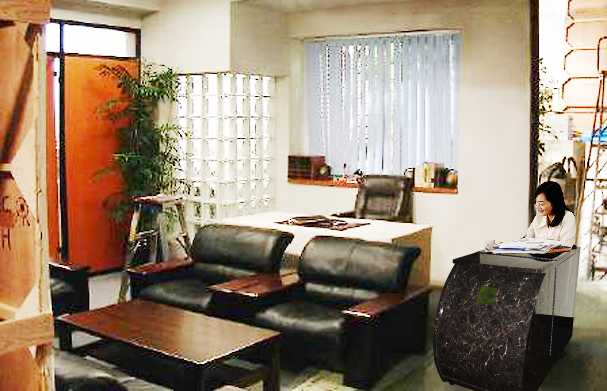
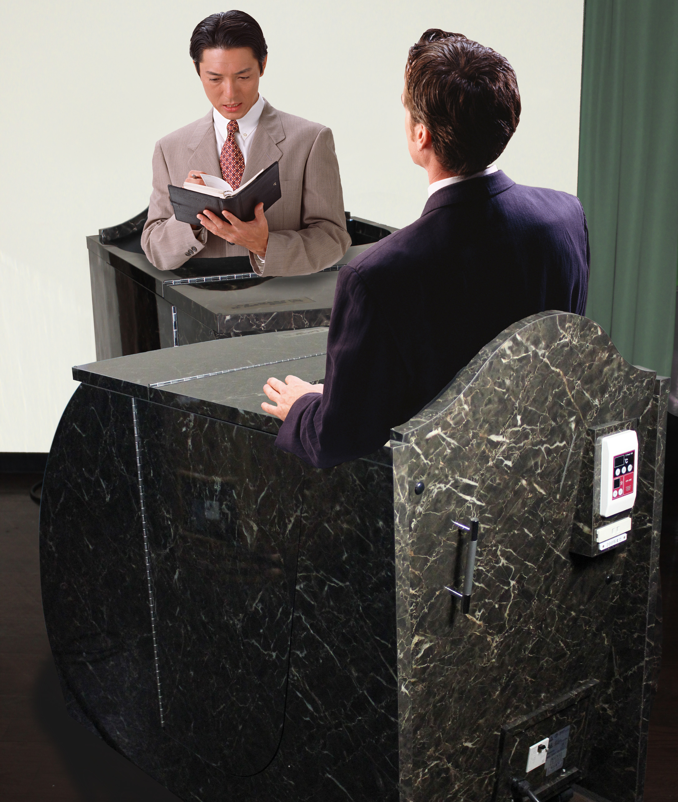

日本美丽庄园公司希望在中国招募代理销售伙伴，JCNET作为该公司在中国代理的总代理，包括实行中国代理的募集，审查，联络，管理，回收货款等。
有意者请通过联系我们与JCNET联系，欢迎邀请日方访问贵公司，欢迎访问日本美丽庄园，实际体验，洽谈合作。
中国的老总，高管，特别是身居要职的中年女性，每天在空调办公室处理大量事务，工作压力极大，处于亚健康状态的很多，而且由于工作繁忙，没有时间去美容院。如果在办公室里配置小型温疗仓，就可以每天边处理业务，边做治疗。通过温疗维护，增进健康，减轻心理压力，提高工作效率，使您的事业更加发达。
在商谈业务时，也可以和商业对手边享受波士维纳温疗仓，边饮茶，边会谈，可以期待比在高级餐馆请客更好的效果。
4种型号可供选择（具体请发送邮件beautyvillagetm@gmail.com联系JCNET）
波士维纳温疗仓以现代化方式解决现代人的烦恼，必为贵店的美容美体业务展开增添新魅力，欢迎协商，欢迎访问日本美丽庄园，实际体验，洽谈合作。
